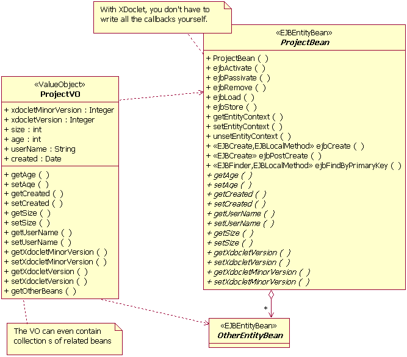

The <valueobject> task is the XDoclet embodiment of the Value Object pattern, as described in Core J2EE Patterns. This pattern is also published in many other books and community sites around the world, and has proven to be an essential pattern to solve some EJB shortcomings.
Motivation: every remote enterprise bean call may go through the network, implying a heavy performance penalty. For entity beans this is specially dangerous: every entity bean has a getter and a setter for its properties, and each of these calls would incur a remote, networked call. If your application is filling a form using the bean properties it would make a remote call for each property. No, no good.
The solution is to create a coarse-grained object that contains some or all the bean properties and provide a method to create this object from the bean properties and another method to set the bean properties from such an object. This object is what we call the Value Object, a POJO (plain old java object) containing the enterprise bean property values. The following diagram illustrates this approach.

Suppose you have defined a Customer entity with properties
such as id, name, birth date, full address, number of children, preferred
TV series, whether s/he likes fruit loops or cheerios and oodles of
other information. You need them in different parts of your application.
However, sometimes you just need the customer ID and name. It would be a
waste of bandwidth and CPU to create a value object with all properties
and pass it to your application, specially if you got thousands or
millions of them.
In a scenario like the one above, it would be useful to define
multiple value objects, each one containing a different set of
properties. You could have a CustomerFull VO containing all
properties and a CustomerLight VO containing just the
customer ID and name.
Your entity bean would provide methods to obtain both value objects, and perhaps methods to update the entity from both of them. The following diagram illustrates this approach.
{{{INSERT UML DIAGRAM HERE}}}
XDoclet helps you to define and create your value objects. Below you can see a XDoclet-tagged Entity Bean source code, with @tags related to Value Object generation. Let's take a look at a bean marked up to generate Value Objects. Please note that this is not a complete example: there are many tags missing, only the ones related to Value Objects are presented here.
package example.ejb;
import javax.ejb.EntityBean;
import java.util.Collection;
import java.util.Date;
/**
* This is a Value Object usage example for XDoclet. It demonstrates the use
* of most value object features like property selection, aggregation and
* composition.
*
* @ejb.bean
* type="CMP"
* name="Customer"
* view-type="local"
*
* @ejb.value-object
* name="Customer"
* match="*"
*
* @ejb.value-object
* name="CustomerLight"
* match="light"
*/
public abstract class CustomerEJB implements EntityBean {
/**
* @ejb.value-object match="light"
* @ejb.persistence
*/
public abstract String getId();
public abstract void setId(String id);
/**
* @ejb.value-object match="light"
* @ejb.persistence
*/
public abstract String getName();
public abstract void setName(String name);
/**
* @ejb.value-object
* aggregate="example.vo.ProductValue"
* aggregate-name="PreferredProducts"
* members="example.interfaces.Product"
* members-name="PreferredProduct"
* relation="external"
* @ejb.relation
* name="Customer-Product"
* role-name="customer-prefers-products"
*/
public abstract Collection getPreferredProducts();
public abstract void setPreferredProducts(Collection products);
/**
* @ejb.value-object
* compose="example.vo.AddressValue"
* compose-name="Addresses"
* members="example.interfaces.Address"
* members-name="Address"
* relation="external"
* @ejb.relation
* name="Customer-Address"
* role-name="customer-has-addresses"
*/
public abstract Collection getAddresses();
public abstract void setAddresses();
/**
* @ejb.persistence
*/
public abstract int getNumberOfChildren();
public abstract void setNumberOfChildren(int nof);
/**
* @ejb.persistence
*/
public abstract boolean getLikesFruitLoops();
public abstract void setLikesFruitLoops(boolean loops);
/**
* @ejb.persistent-field
*/
public abstract boolean getLikesCheerios();
public abstract void setLikesCheerios(boolean cheerios);
/**
* @ejb.interface-method
*/
public abstract CustomerValue getCustomerValue();
/**
* @ejb.interface-method
*/
public abstract CustomerLightValue getCustomerLightValue();
/**
* @ejb.interface-method
*/
public abstract void setCustomerValue(CustomerValue value);
}
As you can see, there is only one tag you need to write to instruct
XDoclet to generate value objects: @ejb.value-object.
However, there are many places and uses for this tag. Let's go through
the basic steps to mark your bean until you get everything generated by
XDoclet.
The first thing to do is to inform XDoclet which value objects it
will generate for your bean. At class level, introduce the
@ejb.value-object tag and supply at least the
name and match parameter. The name
parameter will tell XDoclet how to name the generated class for that
value object. XDoclet will apply the pattern task parameter to the
supplied name to determine the class name. The default pattern is
{0}Value, so in this example we get two classes
generated: CustomerValue and CustomerLightValue.
The match parameter will tell XDoclet which entity
properties will be included in the generated value object. It's just
an identifier that you will have to repeat at each property getter
you want included in the value object. The * is a special
value, meaning that all properties will be included. So, in this
example the CustomerValue will have the same properties
as the entity bean and the CustomerLightValue will have
only the id and name properties.
Starting with a given source entity and the target on the other side of a relation, there are 1:1, 1:n, n:1, and n:n relations.
Internally to XDoclet, a relation is tracked separately of either side of the relation using the name attribute of @ejb.relation. If both sides of a relation have an @ejb.relation tag with a matching name attribute (the "name" attribute is the key that is used to uniquely identify the relationship), information that would otherwise be incomplete can be inferred. But when the target relation does not have corresponding reverse visibility of the source in the relation and there is no @ejb.relation tag in the target with a matching name attribute, there are *some* cases where additional information needs to be provided to XDoclet in lieu of the missing information. The @ejb.target-relation tag provides the ability to provide this information. Thus, it is only needed or used when there is one-way visibility on a relation and the information that would normally be provided at the target is critical to the complete set of information that is necessary to generate the information about the relation as a whole.
The primary case of where this is necessary is where you have an 1:n unidirectional link (there is no link visibility on the n side of the link). Since 1:n links are modeled with the n side keeping a foreign key reference of the 1 side, attempting to generate a 1:n link without reverse visibility leaves XDoclet without the critical information it needs to know: the related-pk-field attribute. Using the target-relation tag allows this information to be provided. It's possible to model a 1:1 link this way, where the schema visibility is target-to-source, but the desired design visibility is source to target (for example, creating a new application on top of a legacy schema.) In this case the target-relation tag is used to describe the schema details, even though the generated APIs are reversed of that and under normal 1:1 circumstances, it would be fine to store the foreign key in the source entity.
n:n and n:1 relations are the easy cases, because the source entity contains the foreign key of the related entity. Whether or not there is reverse visibility is irrelevant to XDoclet since it has all the information it needs about the relation in the @ejb.relation tag.
Value objects can have compose and aggregate
properties. These are multi valued properties that map an EJB relationship.
In this example we've got both aggregate and compose properties,
those being preferredProducts and addresses,
respectively.
Aggregation should be used when the related object is not directly
dependent on the one we're declaring the value object.
Product has no direct dependency to Customer,
so the preferredProducts relationship is just an
aggregation. This means that the generated accessor methods for this
relationship will lookup Product entities when adding
them via the generated addPreferredProduct() method.
Composition should be used when the related object is directly
dependent on the one we're declaring the value object, and cannot
exist without it. The creation of the related object is the
responsibility of the entity we're coding. Address is
dependent on Customer, so the addresses relationship is
a composition. This means that the generated accessor methods for
this relationship will create and remove Address
entities when adding and removing them via the generated
addAddress() and removeAddress() methods.
Aggregation and composition may be confusing at first. As a rule of thumb, consider object creation responsibility: if the entity we're coding isn't responsible for creating the related entity, then it's aggregation. If it is responsible for this, then it's composition. We ask you to take a look at the generated code so you can really grasp the difference between the two.
Now let's break down the many parameters that are needed to
accomplish a multi valued property on a value object. The
aggregate-name (or compose-name)
parameter tells XDoclet how the accessor methods to this property in
the value object should be called. The value of this parameter should be
the method name, sans get or set. In this
example, we will have methods called getPreferredProducts()
and setPreferredProducts(), because PreferredProducts was
the aggregate-name for the relationship.
The aggregate (or compose) parameter
tells XDoclet which should be the type of items contained in
the multi valued property. This should be a fully qualified class name.
In this example, the getAddresses() method of the value
object will return a Collection of
example.vo.AddressValue objects. Things should be
starting to make sense, no?
The members parameter tells XDoclet the fully qualified
type of the related objects. This should be the type of the objects
returned by the entity getter. Please note that aggregate
and aggregate-name (or compose and
compose-name) relate to names and types in the value
object, while members and members-name
relate to names and types in the entity bean. In this example, the
getPreferredProducts() method returns a
Collection of example.interfaces.Product
objects, so this should be the value of the members
parameter.
The members-name parameter should be the name of the
method in the related object that XDoclet should use to get the
object that will be put in the multi valued value object property,
without get or set. In this example,
XDoclet needs to call a Product.getProductValue() method
to obtain the ProductValuethat will be put in the value
preferredProducts property. Are you still with me?
Last, the relation parameter, which only accepts the
external value tells XDoclet that this property can be
updated outside of the scope of this value object, so the generated
method should always retrieve the property value. For relations,
this is a no brainer: always include the relation="external"
parameter.
Please notice the last three methods in this example. The Bean
implementation class generated by XDoclet will contain them, but by
default they won't be included in the remote or local interface for the
bean. If you need to change that, you should declare them as abstract
in your beans and tag them as you wish. In this example, we want the
getCustomerValue(), getCustomerLightValue()
and setCustomerValue(CustomerValue)
methods exposed in the remote interface, so we tag them with
@ejb.interface-method. We don't want the
setCustomerLightValue() method exposed, so we don't
declare it here -- it will be in the generated implementation,
however.
The <valueobject> task can be customized to
your liking, to change things like the name of the package where the
generated classes go and the name of the generated value objects.
You can change the target package using a nested
packageSubstitution
element. For example, suppose we want all our value objects generated
under the example.valueobjects package.
<valueobject>
<packageSubstitution packages="ejb" substituteWith="valueobjects"/>
</valueobject>
This tells XDoclet to substitute all packages names ending in "ejb" with
a package name ending in "valueobjects". The
packageSubstitution element is common to all
XDoclet subtasks, so it's a good thing to understand how to use it.
Now, if you don't like the default naming pattern for value objects, you
can change it by setting the pattern attribute for the
<valueobject> task. The value must contain
{0} in the name, which XDoclet will substitute with the
bean name. In the above example, if we want our value objects to be
named CustomerVO and CustomerLightVO, in the
examples.valueobjects package, this would be the task
declaration:
<valueobject pattern="{0}VO">
<packageSubstitution packages="ejb" substituteWith="valueobjects"/>
</valueobject>XDoclet provides merge points in the value object template that you can use to add custom code to the generated value objects. If you don't know about merge points, you should read about them now.
The merge point is just before the closing brace of the generated
class and is called valueobject-custom.xdt. Please note
that the merge file can contain any java code and can use the
XDoclet template language. You can use this merge point to add
new methods or inner classes to the generated value object. If
you're really unhappy with the generated value object, you
can completely replace the template used by XDoclet to generate it.
Please refer to further documentation to learn about the template
language.
We want to answer the following question : "how do I represent a tree-like structure with entity EJB and value-objects using XDoclet ?".
As you may know, entity EJB access through RMI can be costly and that's why one wants to use value-objects. However, we introduce a small catch here : we want the entity EJB to have some relationships with other entity EJB of the same class. This might seem easy but there's some catch when we want to create the value objects.
We choose to implement a family tree. The family tree is made of Persons. Each person has a name and an age. Moreover, a Person knows its children. Each child is itself a Person. We just described a 1-N (1 person can have 0..N children) uni-directional relationship (we don't implement the fact that a child knows its father, nor brothers).
Coding this, we end up with :
/**
* @ejb.interface-method
* @ejb.relation name="offspring"
* role-name="father"
* target-ejb="Person"
* target-role-name="child"
*
* @jboss.target-relation related-pk-field="name"
* fk-column="father"
*
* @ejb.value-object
* relation="external"
* aggregate="foundryserver.beans.interfaces.PersonLightValue"
* aggregate-name="Offspring"
* members="foundryserver.beans.interfaces.PersonLocal"
* members-name="Offspring"
*
* @return Returns the offspring.
*/
public abstract Collection getOffspring();
/*
* @ejb.interface-method
*/
public abstract PersonLightValue getPersonLightValue();
To be able to run XDoclet on the EJB the first time, pay attention to the following points :
Now a bit of explanation. The most important thing is to understand that a value-object cannot reference other value-objects of the same class. Think about this situation : one wants to retrieve a person that has some children. He gets the value-object for that person. Now, if the value-object can references to the children, then those children's value-objects are added to the person's value-object. However, to be complete, those children's value objects must in turn have the value-objects of their children, etc. This is a recursive loop and doing so can lead us to have a graph of value-object covering the whole database. Not good. To prevent that, we break the loop. The strategy is to represent the children with a different class of value-object, the PersonLightValue. The particularity of this one is that it doesn't have any kind of reference to its own children, thus avoiding any uncontrollable recursive construction. Of course this is limiting a bit because we'll have to retrieve the children of Person manually.
To summarize, there will be two kind of value objects. The "main" one that has all information you need, including references to the offspring. The references will point to other value objects, the "light" one, representing the children, without any reference to their own children (break the loop).
An example of code to access the whole thing :
PersonLocal stef = PersonUtil.getLocalHome().findByPrimaryKey("Stefan");
PersonValue spv = stef.getPersonValue();
out.println("<br/> "+spv.getName()+" is "+spv.getAge());
PersonLightValue offspring[] = spv.getOffsprings();
if( offspring != null)
for( int i=0; i<offspring.length; i++)
out.print( offspring[i].getName() + " - ");
To be complete, just have a look at the relationship declaration.
It uses the "target-ejb" and "target-role" attributes. It's because we define a
uni-directional relationship (see "How Relationships Work" for more information).
For the same set of reasons, we also have to add the @jboss.target-relation tag.
Finally, note that we used an aggregation. This is arbitrary.